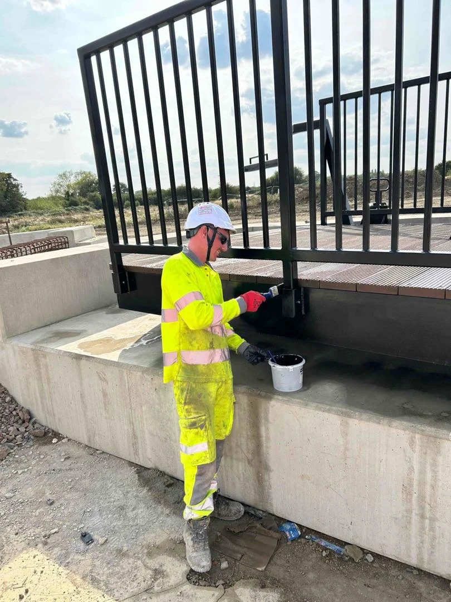
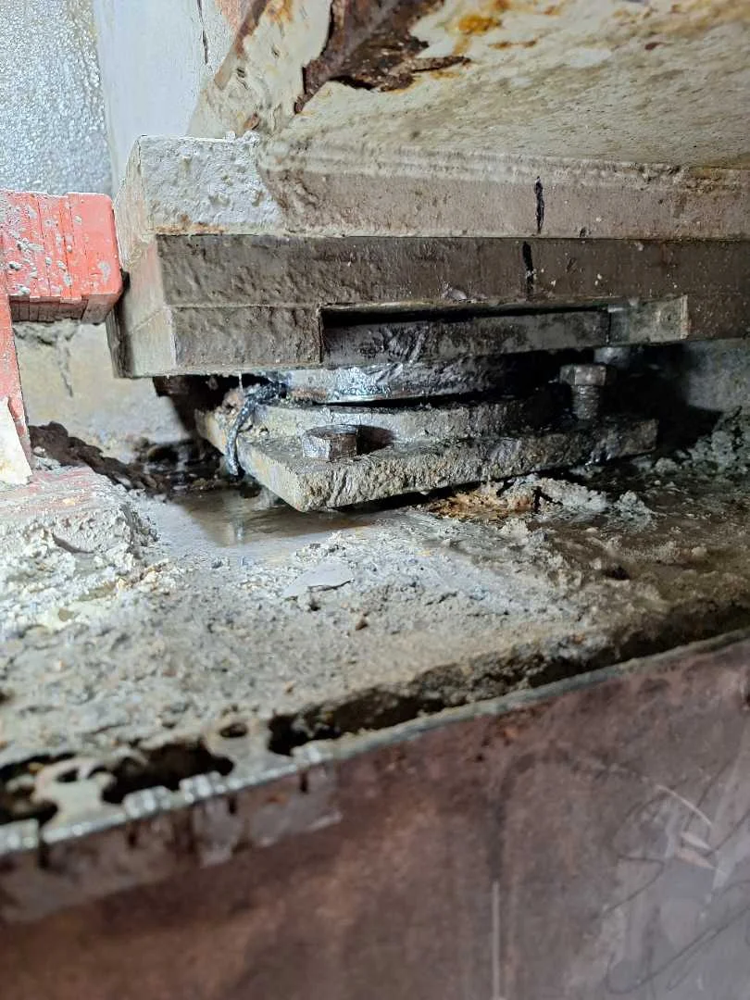

Installation
Practical site support for bearings and permanent structural components.
EKSPAN / INSTALLATION & REPLACEMENT
Bearing installation, replacement, maintenance and repair for new and existing structures.

HOW WE SUPPORT YOUR PROJECT
Practical site support for bearings and permanent structural components.
Coordinate bearing works with access, support and the structural load-transfer sequence.
Inspection, assessment and specialist works on existing structures.
FROM ASSESSMENT TO SITE
Bearing condition, access and the proposed works inform the installation approach.
Coordinate temporary support, jacking and bearing works with the structure and site constraints.
Install the bearings and coordinate grouting, load transfer and de-jacking within the agreed methodology.

THE CAPABILITY / IN PRACTICE
Specialist site delivery, bearing installation and jacking.
Explore the project ↗
THE WORK / IN DETAIL
Westquay connects bearing investigations, temporary works and replacement in an operating retail setting.
Read the case study ↗